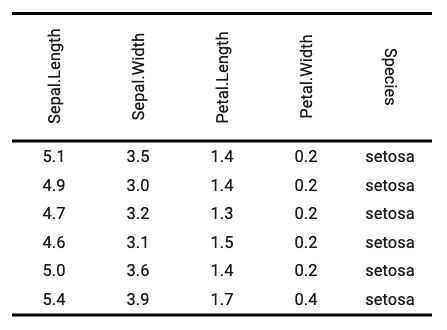

It can be useful to be able to change the direction, when the table headers are huge for example, header labels can be rendered as "tbrl" (top to bottom and right to left) corresponding to a 90 degrees rotation or "btlr" corresponding to a 270 degrees rotation. The function change cell text direction. By default, it is "lrtb" which mean from left to right and top to bottom.
'Word' and 'PowerPoint' don't handle auto height with rotated headers.
So you need to set header heights (with function height())
and set rule "exact" for rows heights (with function hrule())
otherwise Word and PowerPoint outputs will have small height
not corresponding to the necessary height to display the text.
Note that PDF does not yet support vertical alignments when text is rotated.
rotate(x, i = NULL, j = NULL, rotation, align = NULL, part = "body")a flextable object
rows selection
columns selection
one of "lrtb", "tbrl", "btlr".
vertical alignment of paragraph within cell, one of "center" or "top" or "bottom".
partname of the table (one of 'all', 'body', 'header', 'footer')
When function autofit is used, the rotation will be
ignored. In that case, use dim_pretty and width instead
of autofit.

library(flextable)
ft_1 <- flextable(head(iris))
ft_1 <- rotate(ft_1, j = 1:4, align = "bottom", rotation = "tbrl", part = "header")
ft_1 <- rotate(ft_1, j = 5, align = "bottom", rotation = "btlr", part = "header")
# if output is docx or pptx, think about (1) set header heights
# and (2) set rule "exact" for rows heights because Word
# and PowerPoint don't handle auto height with rotated headers
ft_1 <- height(ft_1, height = 1.2, part = "header")
ft_1 <- hrule(ft_1, i = 1, rule = "exact", part = "header")
ft_1
#> a flextable object.
#> col_keys: `Sepal.Length`, `Sepal.Width`, `Petal.Length`, `Petal.Width`, `Species`
#> header has 1 row(s)
#> body has 6 row(s)
#> original dataset sample:
#> Sepal.Length Sepal.Width Petal.Length Petal.Width Species
#> 1 5.1 3.5 1.4 0.2 setosa
#> 2 4.9 3.0 1.4 0.2 setosa
#> 3 4.7 3.2 1.3 0.2 setosa
#> 4 4.6 3.1 1.5 0.2 setosa
#> 5 5.0 3.6 1.4 0.2 setosa
dat <- data.frame(
a = c("left-top", "left-middle", "left-bottom"),
b = c("center-top", "center-middle", "center-bottom"),
c = c("right-top", "right-middle", "right-bottom")
)
ft_2 <- flextable(dat)
ft_2 <- theme_box(ft_2)
ft_2 <- height_all(x = ft_2, height = 1.3, part = "body")
ft_2 <- hrule(ft_2, rule = "exact")
ft_2 <- rotate(ft_2, rotation = "tbrl")
ft_2 <- width(ft_2, width = 1.3)
ft_2 <- align(ft_2, j = 1, align = "left")
ft_2 <- align(ft_2, j = 2, align = "center")
ft_2 <- align(ft_2, j = 3, align = "right")
ft_2 <- valign(ft_2, i = 1, valign = "top")
ft_2 <- valign(ft_2, i = 2, valign = "center")
ft_2 <- valign(ft_2, i = 3, valign = "bottom")
ft_2
#> a flextable object.
#> col_keys: `a`, `b`, `c`
#> header has 1 row(s)
#> body has 3 row(s)
#> original dataset sample:
#> a b c
#> 1 left-top center-top right-top
#> 2 left-middle center-middle right-middle
#> 3 left-bottom center-bottom right-bottom